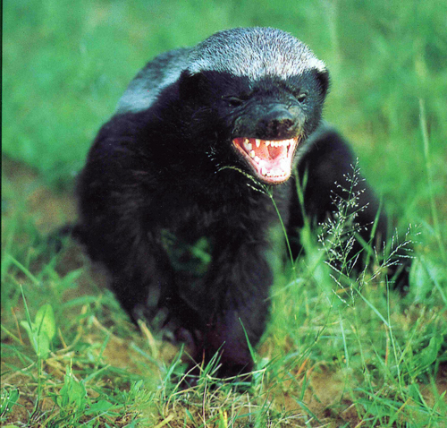

The honey badger (Mellivora capensis), also known as the ratel, is the only species in the mustelid subfamily Mellivorinae and its only genus Mellivora. It is native to Africa, Southwest Asia, and the Indian subcontinent. Despite its name, the honey badger does not closely resemble other badger species; instead, it bears more anatomical similarities to weasels. It is classed as Least Concern by the IUCN owing to its extensive range and general environmental adaptations. It is primarily a carnivorous species and has few natural predators because of its thick skin and ferocious defensive abilities.
The honey badger has a fairly long body, but is distinctly thick-set and broad across the back. Its skin is remarkably loose, and allows it to turn and twist freely within it. The skin around the neck is 6mm thick, an adaptation to fighting conspecifics. The head is small and flat, with a short muzzle. The eyes are small, and the ears are little more than ridges on the skin, another possible adaptation to avoiding damage while fighting.
The honey badger has short and sturdy legs, with five toes on each foot. The feet are armed with very strong claws, which are short on the hind legs and remarkably long on the forelimbs. It is a partially plantigrade animal whose soles are thickly padded and naked up to the wrists. The tail is short and is covered in long hairs, save for below the base.
Honey badgers are the largest terrestrial mustelids in Africa. Adults measure 23-28cm in shoulder height and 55–77cm in body length, with the tail adding another 12–30cm. Females are smaller than males. Males weigh 9-16kg while females weigh 5 to 10kg on average. Skull length is 13.9–14.5 cm in males and 13cm for females.